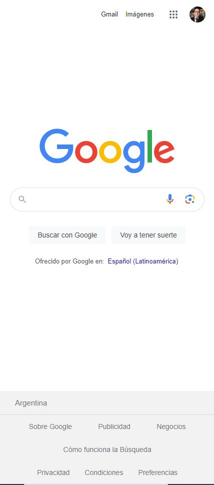
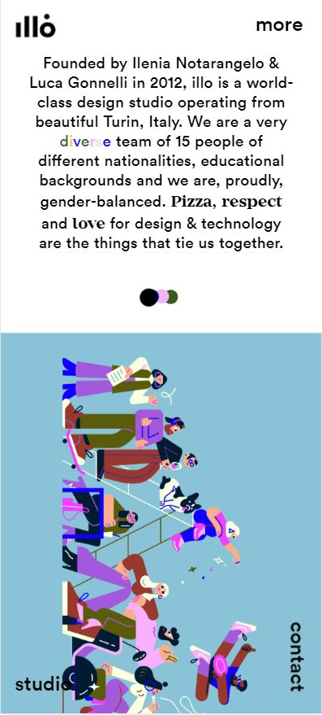

Visual hierarchy
TeslaVisual hierarchy is a fundamental principle of design, the idea is that by manipulating design elements and visual characteristics, you can direct user's attention to the most important part of a page's content. In the example above from the Tesla homepage, you can see this idea in action, a strong bright color is used against a dull background to grab attention. Together with the name of the model as the main text, and secondary information in a smaller font.
Fitt's Law
Google Paul Fitts, showed that the time required to move to a target depends on the distance to it, yet relates inversely to its size. By his law, fast movements and small targets result in greater error rates, due to the speed-accuracy trade-off. It's used in user interface design to decide the proper sizes of interactive elements, the best location for them, and to notice potential usability issues. Fitts's Law brings safety, convenience, and usability into UI design. Fitts's Law is the reason buttons on websites are large, and menus are usually located in the upper corners of your screen. Google puts its search field in the center of the screen and menu options in the upper corners. Making it easier and faster for us to click the button. The “Google Search” button is directly below the search input field, and the entire button is clickable
Contrast
Illo Light and dark. Big and small. Warm and cool. As a design principle, contrast is all about using opposites to capture your audience's attention and draw the eye to key parts of your message. Illo is a small design studio based in Turin, Italy. Their About Us page combines many contrasting elements and media-types: illustrations, wide photographs, rows of texts, square portraits with colored backgrounds, and an all-encompassing combination of rounded black text on a solid white background.